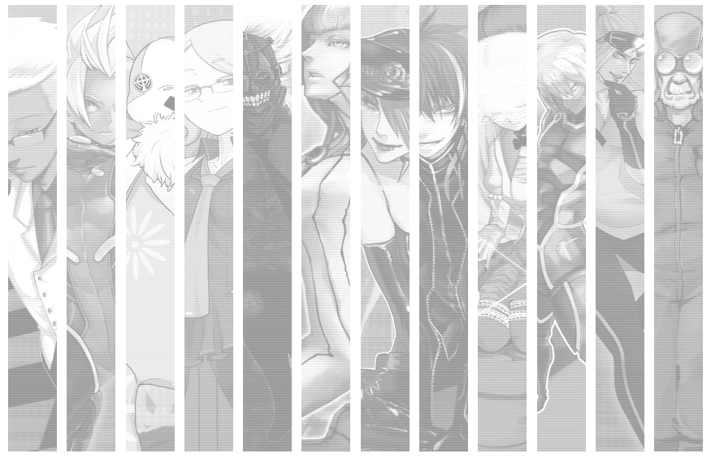

能力者に対する畏怖、差別、偏見。
多くの能力者がこの人工島に収容され、
いつしか巨大な街と化し、独自の社会が形成されていた。
強きを求め争う者あり。
利を欲し溺れる者あり。
欲を喰らい貪る者あり。
RED WITHIN

PsychicTRPG 【 鋼鉄のユグドラシル 】の舞台は
能力者に対する畏怖、差別、偏見。
多くの能力者がこの人工島に収容され、
いつしか巨大な街と化し、独自の社会が形成されていた。
強きを求め争う者あり。
利を欲し溺れる者あり。
欲を喰らい貪る者あり。
― あなたはこの世界でどう生きるのか ―
ルールブックを開く 世界観を読む